Isaiah's Food Journey
Welcome! This website is my Foods 9 class project, where I share what I've learned about cooking and show off the foods I've made in class.
Welcome! This website is my Foods 9 class project, where I share what I've learned about cooking and show off the foods I've made in class.
A little bit about who I am, on and off the cutting board.
Hi, I'm Isaiah. This is my Foods 9 Website. I really enjoy cooking with my friends and family. My top values are my faith, family, and friends. I enjoy doing things like playing Fortnite, sports such as hockey, and learning new things.
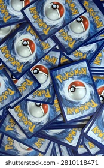
Collecting Pokémon Cards
Hockey
Learning New Things
Video Games
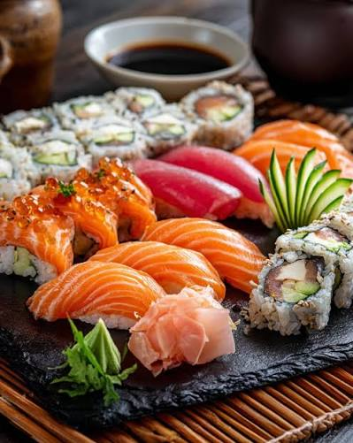
Sushi
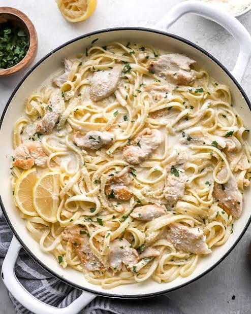
Pasta
Tacos
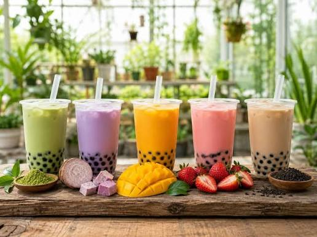
Bubble Tea
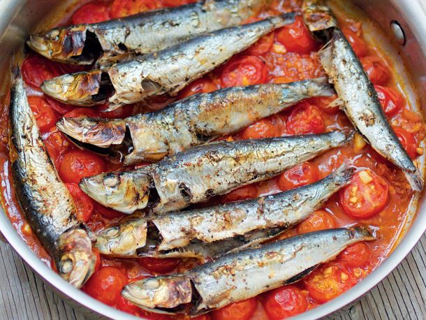
Sardines
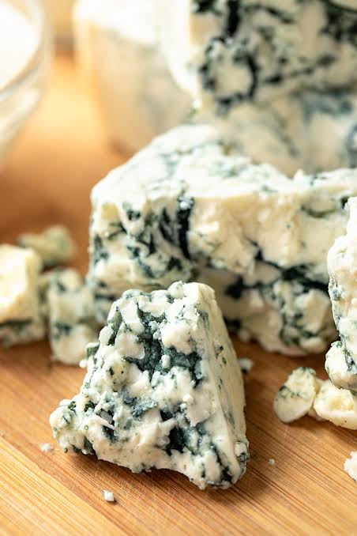
Blue Cheese
Canadian foods I've cooked so far for Foods 9.
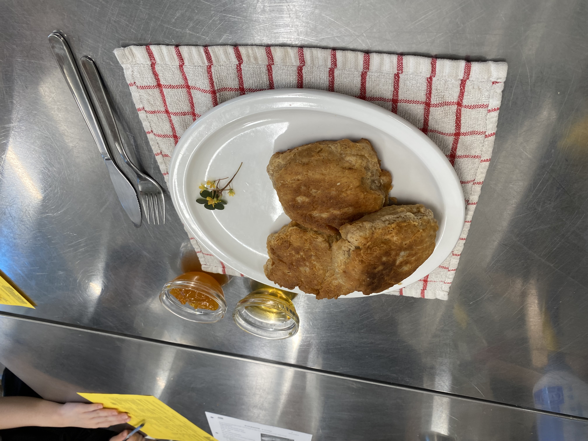
A traditional pan-fried or baked bread, popular in Indigenous and Métis cooking across Canada.
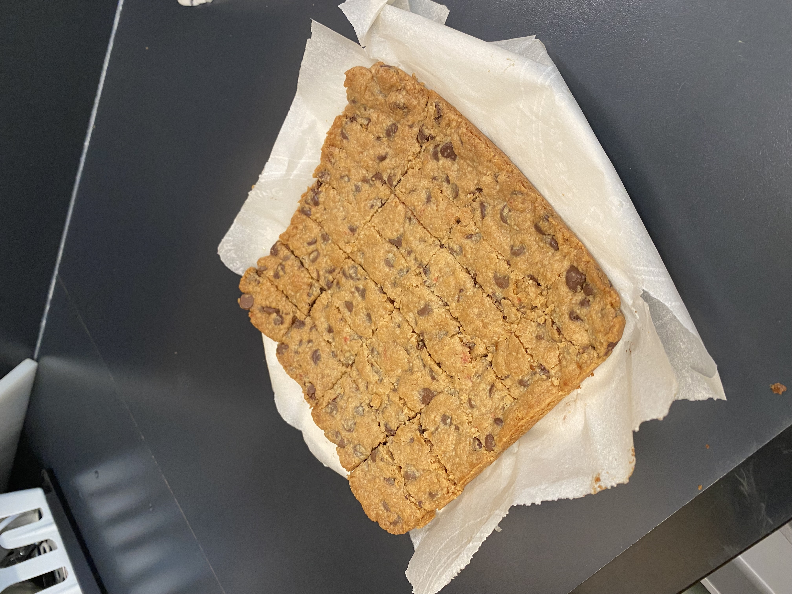
A sweet, buttery dessert bar with a crunchy toffee layer - a classic Canadian treat.
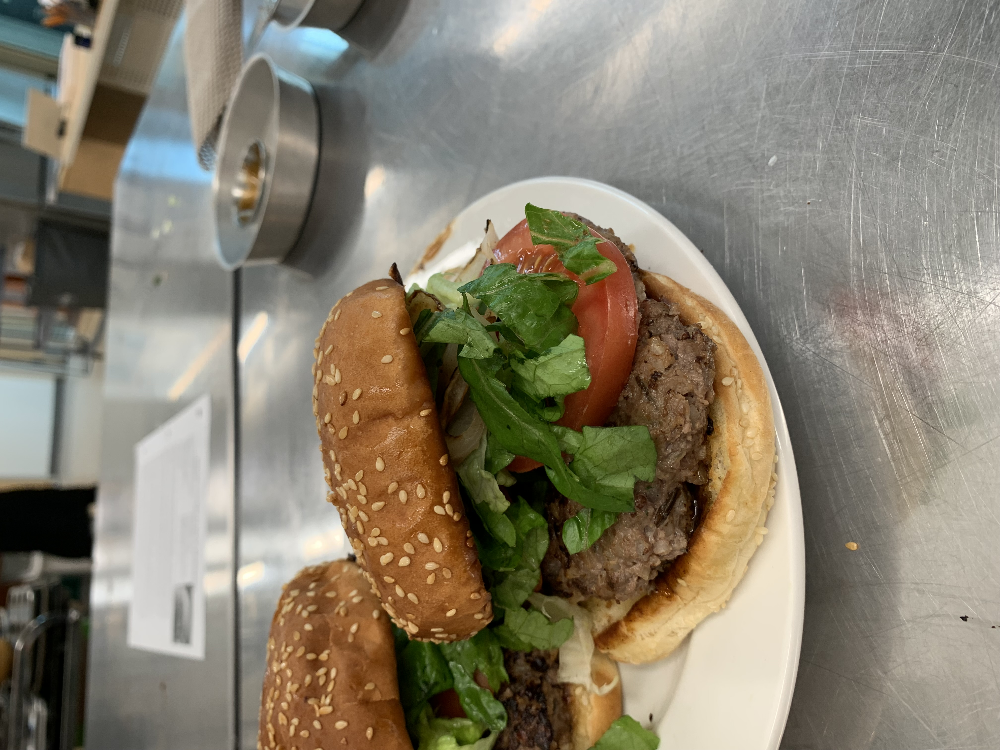
A hearty burger made from bison, a lean alternative that's popular across the Canadian prairies.
Mexican foods I've cooked so far for Foods 9.
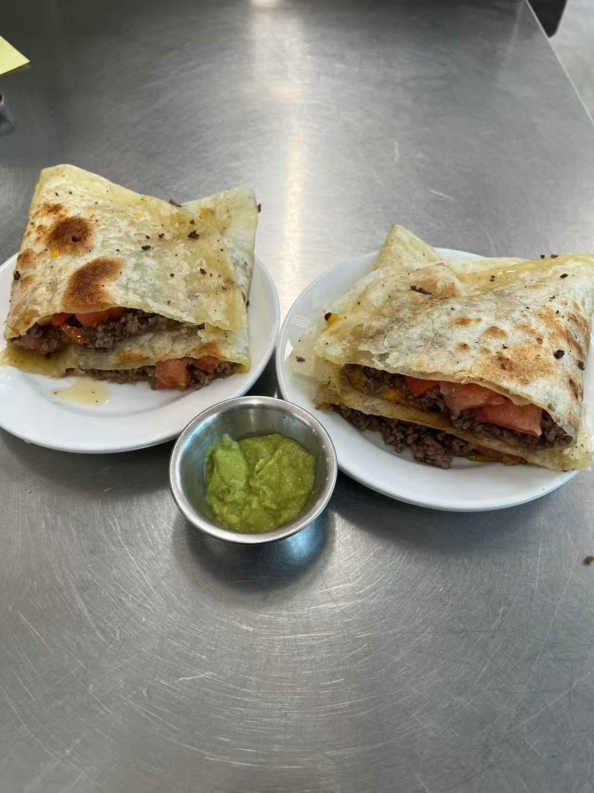
Tortillas filled with melted cheese (and sometimes meat or veggies), folded and grilled until golden and crispy.
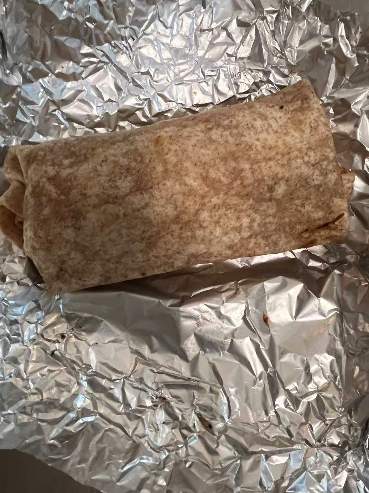
Large flour tortillas wrapped around seasoned ground beef, cheese, and toppings - a filling, easy meal.
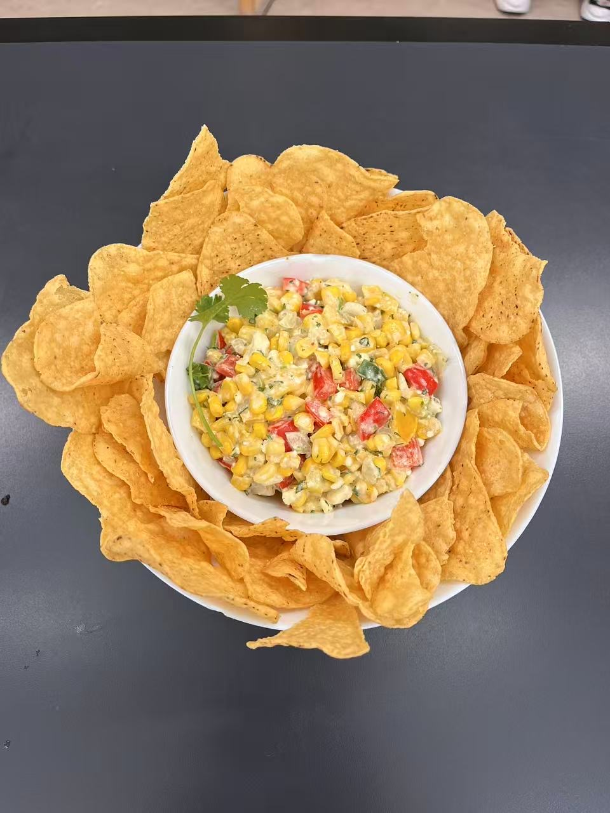
A creamy corn salad with red and green peppers, onion, and cilantro, served in a bowl surrounded by crunchy tortilla chips for scooping.
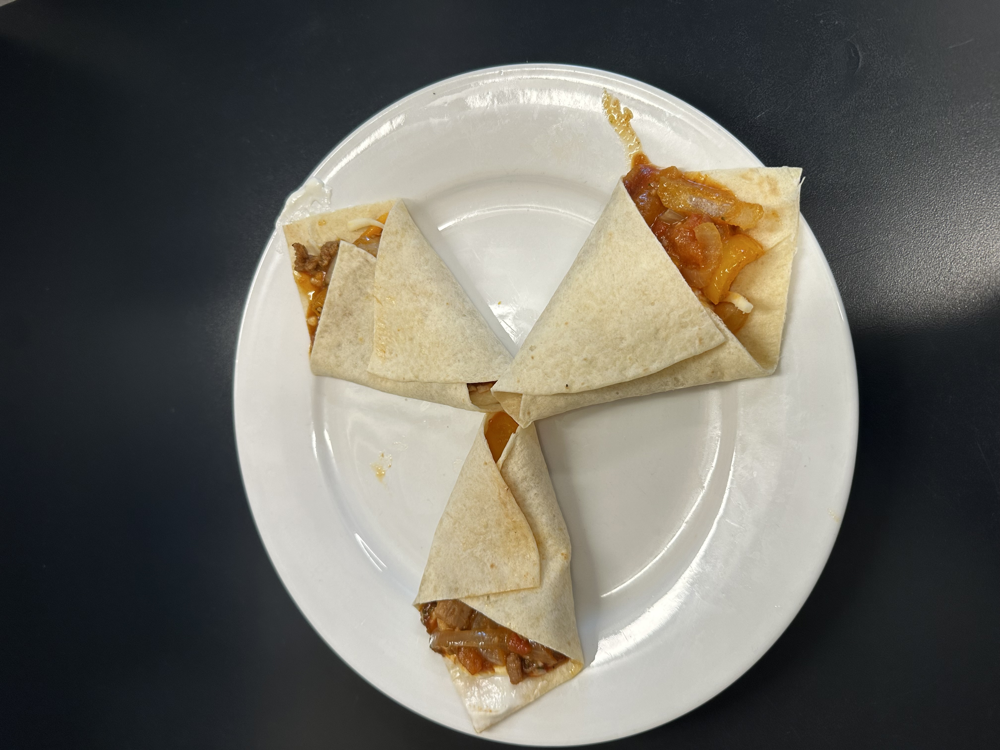
Strips of seasoned chicken sizzled with peppers and onions, wrapped in warm tortillas with your favourite toppings.
Japanese foods I've cooked so far for Foods 9.
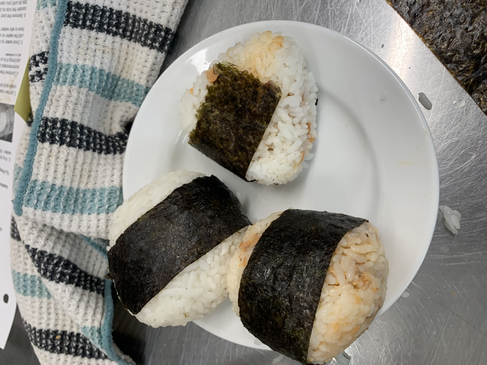
Japanese rice balls shaped into triangles, often filled with tuna, salmon, or pickled plum and wrapped in a strip of seaweed.
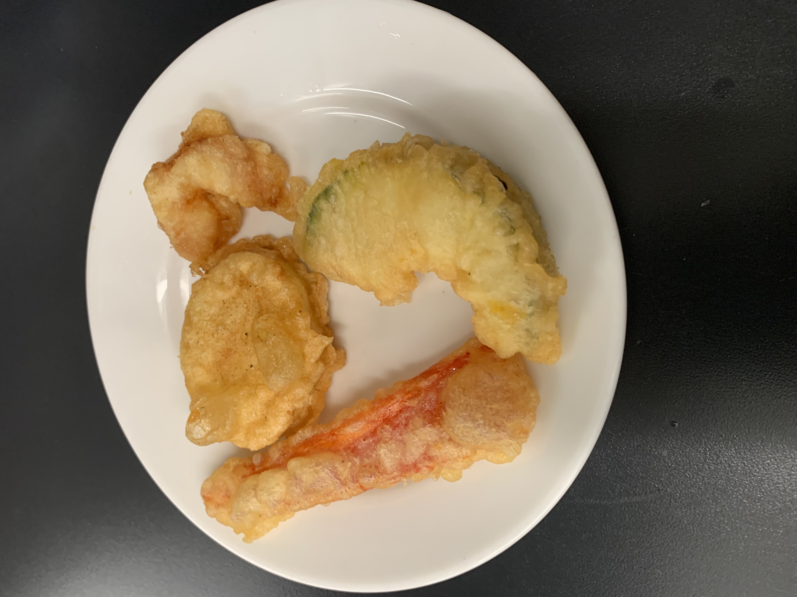
Shrimp and vegetables dipped in a light, ice-cold batter and deep-fried until crispy, served with a dipping sauce.

Pan-fried dumplings filled with seasoned pork and cabbage - crispy on the bottom and soft and steamed on top.